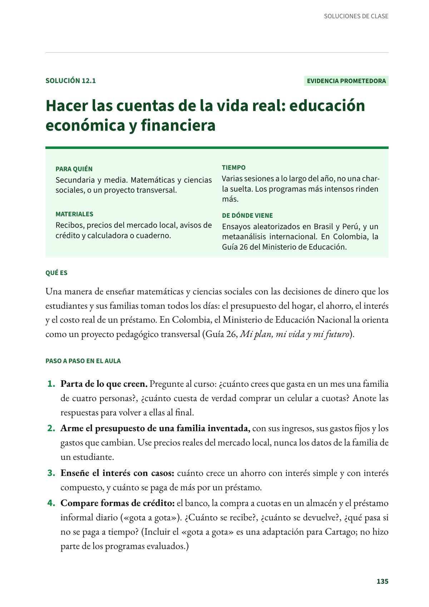
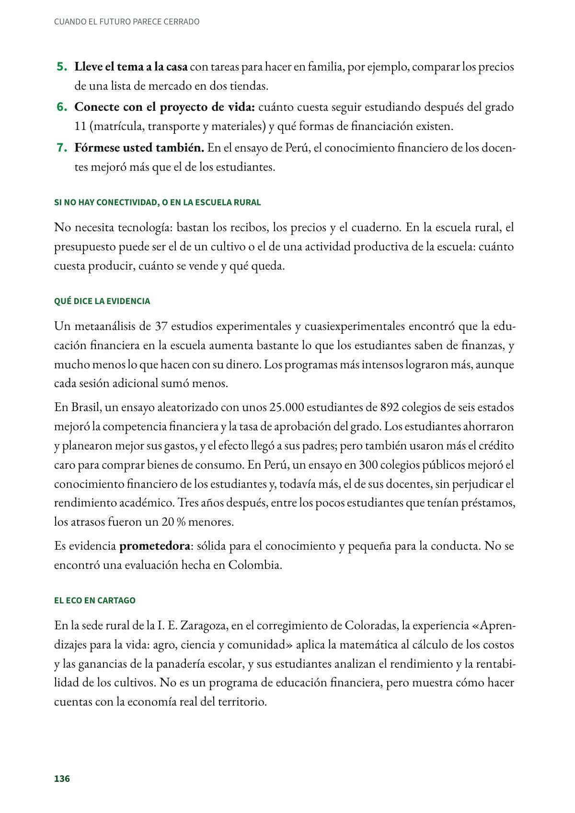
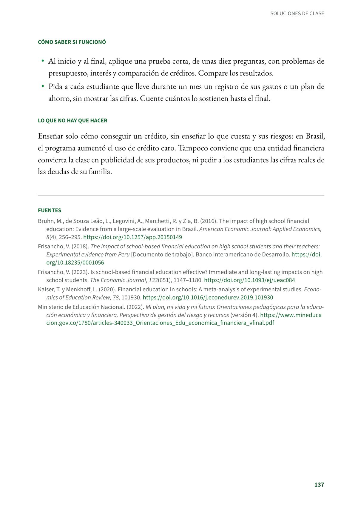
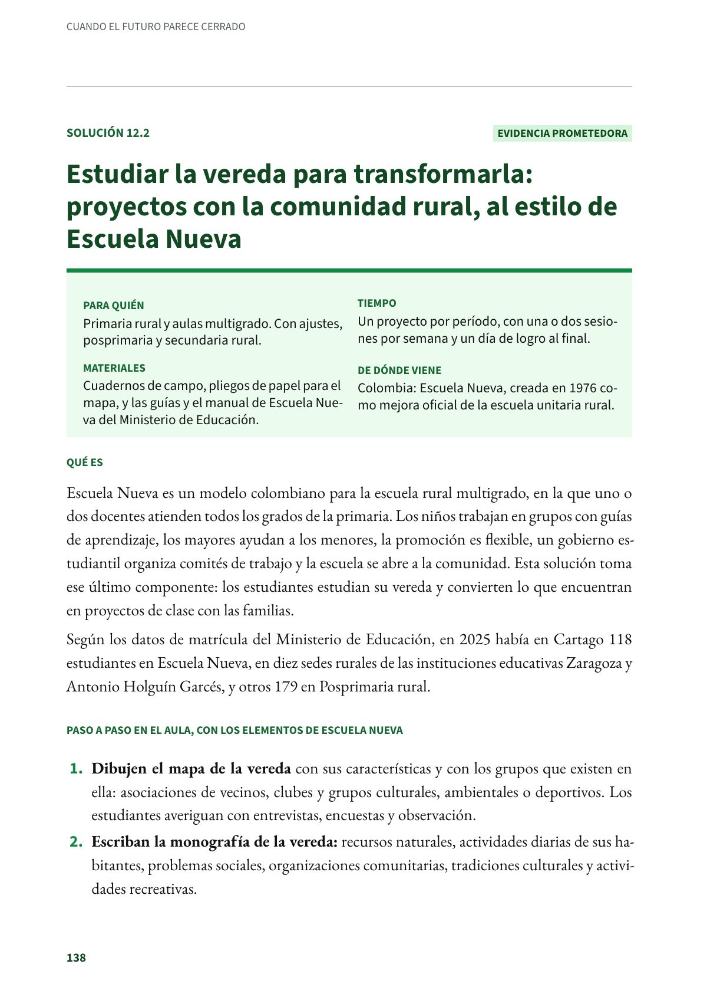

Hacer las cuentas de la vida real: educación económica y financiera
Una manera de enseñar matemáticas y ciencias sociales con las decisiones de dinero que los estudiantes y sus familias toman todos los días. Secundaria y media. Evidencia prometedora.
PDF · 4 págs. · 83 KBEn resumen
- Evidencia: prometedora.
- Para quién: Secundaria y media. Matemáticas y ciencias sociales, o un proyecto transversal.
- Tiempo: Varias sesiones a lo largo del año, no una charla suelta. Los programas más intensos rinden más.
- Materiales: Recibos, precios del mercado local, avisos de crédito y calculadora o cuaderno.
- De dónde viene: Ensayos aleatorizados en Brasil y Perú, y un metaanálisis internacional. En Colombia, la Guía 26 del Ministerio de Educación.
Qué es
Una manera de enseñar matemáticas y ciencias sociales con las decisiones de dinero que los estudiantes y sus familias toman todos los días: el presupuesto del hogar, el ahorro, el interés y el costo real de un préstamo. En Colombia, el Ministerio de Educación Nacional la orienta como un proyecto pedagógico transversal (Guía 26, Mi plan, mi vida y mi futuro).
Paso a paso en el aula
- Parta de lo que creen. Pregunte al curso: ¿cuánto crees que gasta en un mes una familia de cuatro personas?, ¿cuánto cuesta de verdad comprar un celular a cuotas? Anote las respuestas para volver a ellas al final.
- Arme el presupuesto de una familia inventada, con sus ingresos, sus gastos fijos y los gastos que cambian. Use precios reales del mercado local, nunca los datos de la familia de un estudiante.
- Enseñe el interés con casos: cuánto crece un ahorro con interés simple y con interés compuesto, y cuánto se paga de más por un préstamo.
- Compare formas de crédito: el banco, la compra a cuotas en un almacén y el préstamo informal diario («gota a gota»). ¿Cuánto se recibe?, ¿cuánto se devuelve?, ¿qué pasa si no se paga a tiempo? (Incluir el «gota a gota» es una adaptación para Cartago; no hizo parte de los programas evaluados.)
- Lleve el tema a la casa con tareas para hacer en familia, por ejemplo, comparar los precios de una lista de mercado en dos tiendas.
- Conecte con el proyecto de vida: cuánto cuesta seguir estudiando después del grado 11 (matrícula, transporte y materiales) y qué formas de financiación existen.
- Fórmese usted también. En el ensayo de Perú, el conocimiento financiero de los docentes mejoró más que el de los estudiantes.
Si no hay conectividad, o en la escuela rural
No necesita tecnología: bastan los recibos, los precios y el cuaderno. En la escuela rural, el presupuesto puede ser el de un cultivo o el de una actividad productiva de la escuela: cuánto cuesta producir, cuánto se vende y qué queda.
Qué dice la evidencia
Un metaanálisis de 37 estudios experimentales y cuasiexperimentales encontró que la educación financiera en la escuela aumenta bastante lo que los estudiantes saben de finanzas, y mucho menos lo que hacen con su dinero. Los programas más intensos lograron más, aunque cada sesión adicional sumó menos.
En Brasil, un ensayo aleatorizado con unos 25.000 estudiantes de 892 colegios de seis estados mejoró la competencia financiera y la tasa de aprobación del grado. Los estudiantes ahorraron y planearon mejor sus gastos, y el efecto llegó a sus padres; pero también usaron más el crédito caro para comprar bienes de consumo. En Perú, un ensayo en 300 colegios públicos mejoró el conocimiento financiero de los estudiantes y, todavía más, el de sus docentes, sin perjudicar el rendimiento académico. Tres años después, entre los pocos estudiantes que tenían préstamos, los atrasos fueron un 20 % menores.
Es evidencia prometedora: sólida para el conocimiento y pequeña para la conducta. No se encontró una evaluación hecha en Colombia.
El eco en Cartago
En la sede rural de la I. E. Zaragoza, en el corregimiento de Coloradas, la experiencia «Aprendizajes para la vida: agro, ciencia y comunidad» aplica la matemática al cálculo de los costos y las ganancias de la panadería escolar, y sus estudiantes analizan el rendimiento y la rentabilidad de los cultivos. No es un programa de educación financiera, pero muestra cómo hacer cuentas con la economía real del territorio.
Cómo saber si funcionó
- Al inicio y al final, aplique una prueba corta, de unas diez preguntas, con problemas de presupuesto, interés y comparación de créditos. Compare los resultados.
- Pida a cada estudiante que lleve durante un mes un registro de sus gastos o un plan de ahorro, sin mostrar las cifras. Cuente cuántos lo sostienen hasta el final.
Lo que no hay que hacer
Enseñar solo cómo conseguir un crédito, sin enseñar lo que cuesta y sus riesgos: en Brasil, el programa aumentó el uso de crédito caro. Tampoco conviene que una entidad financiera convierta la clase en publicidad de sus productos, ni pedir a los estudiantes las cifras reales de las deudas de su familia.
Fuentes
Bruhn, M., de Souza Leão, L., Legovini, A., Marchetti, R. y Zia, B. (2016). The impact of high school financial education: Evidence from a large-scale evaluation in Brazil. American Economic Journal: Applied Economics, 8(4), 256–295. doi.org
Frisancho, V. (2018). The impact of school-based financial education on high school students and their teachers: Experimental evidence from Peru [Documento de trabajo]. Banco Interamericano de Desarrollo. doi.org
Frisancho, V. (2023). Is school-based financial education effective? Immediate and long-lasting impacts on high school students. The Economic Journal, 133(651), 1147–1180. doi.org
Kaiser, T. y Menkhoff, L. (2020). Financial education in schools: A meta-analysis of experimental studies. Economics of Education Review, 78, 101930. doi.org
Ministerio de Educación Nacional. (2022). Mi plan, mi vida y mi futuro: Orientaciones pedagógicas para la educación económica y financiera. Perspectiva de gestión del riesgo y recursos (versión 4). mineducacion.gov.co
Así se ve en el libro
4 páginas


